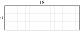
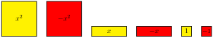
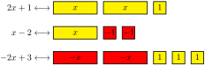
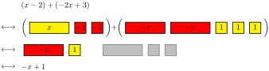
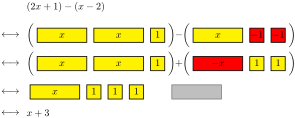
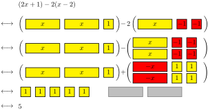
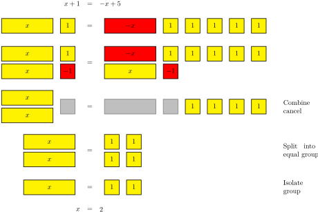

Interpret multiplication as counting boxes in a grid.
Use the grid method to multiply polynomials.
Understand the distinction between scratch work and formal presentation for polynomial multiplication problems.
Multiplication can be represented in several different ways. For this section, we’re going to focus on the idea of multiplication as the area of a rectangle. The area of a rectangle with length and width is given by \(A = \ell w\text{.}\) This can also be seen by drawing out the grid and counting the squares, though it’s a waste of time to do it in practice. So we will often represent this symbolically by simply using a box to represent the idea of the calculation.
One of the advantages of reducing the idea to just a representation is that it creates a space for us to work with abstract ideas. Once we stop focusing on specific numbers, we can start to use symbols to represent the idea of creating a grid. Consider the following examples:
We may not know the particular values of the variables and but we see that if we knew what those values were, then we would be able to draw out the grid to count out the number of squares, and that the number of squares would correspond with the expression inside the box.
We can push this even one step further and think about products that don’t even have a proper physical representation:
Activity7.1.Products of Monomials.
Before we can put this to work for polynomials, we first need to focus a bit on multiplying monomials. There were a few problems in the worksheets that hinted at how this works, but we’ll formally practice some of those manipulations here.
When multiplying monomials, the result is actually just a single product involving a bunch of different factors. There is usually a number part (from the coefficients) and then there is usually some combination of variables. And all we need to do is properly account for them.
\begin{equation*}
\begin{aligned}
5x^2y \cdot 2 x^2 y^2
\amp = (5 \cdot x \cdot x \cdot y) \cdot (2 \cdot x \cdot x \cdot y \cdot y)
\amp \eqnspacer \amp \text{Definition of exponents} \\
\amp = 5 \cdot 2 \cdot x \cdot x \cdot x \cdot x \cdot y \cdot y \cdot y
\amp \amp \text{Rearranging the factors} \\
\amp = 10 x^4 y^3 \amp \amp \text{Definition of exponents}
\end{aligned}
\end{equation*}
This can also be done using the properties of exponents:
Compute \(-3a^3 b^2 \cdot 6 ab^3\text{.}\) Use a presentation that matches each of the three examples above.
Solution.
\begin{equation*}
\begin{aligned}
-3a^3 b^2 \cdot 6ab^3 \amp = (-3 \cdot a \cdot a \cdot a \cdot b \cdot b) \cdot (6 \cdot a \cdot b \cdot b \cdot b) \amp \amp \text{Definition of exponents} \\
\amp = -3 \cdot 6 \cdot a \cdot a \cdot a \cdot a \cdot b \cdot b \cdot b \cdot b \cdot b \amp \amp \text{Rearrange the factors} \\
\amp = -18a^4 b^5 \amp \amp \text{Definition of exponents}
\end{aligned}
\end{equation*}
Activity7.2.Products of Monomials with Grid Representations.
We can use this framework to set up products using the grid representation that was introduced above.
Try it!
Complete the products in the following boxes.
Solution.
We will now start thinking about how to extend this idea to products of polynomials. Just as before, we will start with concrete values before looking at abstract ideas. Let’s say that we wanted to calculate \(18 \cdot 6\text{.}\) We can draw out the picture, but there are a whole lot of squares to count.

So we might start to think about how we can organize this in a more sensible manner. With a little bit of thinking, you might realize that breaking up the into \(10 + 8\) might be helpful. Notice that this doesn’t change the number of boxes. However, it does rearrange the information in a way that’s more useful to us because we can work with more familiar multiplication calculations.
Activity7.3.Product of Binomials Using a Grid.
We can use the same concept for polynomials. For example, we could write the product \((x + 2)(x - 4)\) using the following grid:
The grid itself is just a representation of the calculation. We would still need to use formal mathematical writing to present the calculation.
The grid should be understood as scratch work. Scratch work is similar to an outline for an essay. It’s important and helpful for keeping yourself organized, but it’s not part of the final product. In the end, there must always be enough information in the final presentation so that other people reading your work can know what you did.
Try it!
Calculate \((2x - 3)(x + 4)\) using a grid. Write up your result using a complete presentation, being sure to simplify by combining like terms.
There are times when it’s helpful to make variables a particular length so that they’re different from numbers. For example, we could physically represent the product \((x + 2)(x + 1)\) using the following diagram.
We will be using this representation to help us to think about factoring in the next section.
You are probably familiar with FOIL (First-Outer-Inner-Last) as a way to do this product. One of the downfalls to FOIL is that students end up confused when there are more than two terms in the parentheses. Many are so trapped by FOIL that they try to force it to happen even in problems that do not call for it. The basic problem is that students do not have an organized sense of what FOIL is supposed to accomplish, and so they treat it like a rule to be blindly followed.
However, this grid method extends very naturally regardless of the number of terms in the parentheses. And it’s completely built around the basic idea of thinking of multiplication as an area. Having the right organizational scheme frees you from having to memorize more and more rules.
Activity7.4.Larger Products Using a Grid.
Try it!
Calculate \((x^2 + 3x -4)(x^2 - 5x + 2)\) using a grid. Write up your result using a complete presentation, being sure to simplify by combining like terms.
Calculate \((2x + 5)(3x - 1)\) using a grid. Write up your result using a complete presentation, being sure to simplify by combining like terms.
2.
Calculate \((x^2 - 2x + 3)(x - 4)\) using a grid. Write up your result using a complete presentation, being sure to simplify by combining like terms.
3.
Calculate \((x^2 + 4x - 1)(2x^2 - 3x - 2)\) using a grid. Write up your result using a complete presentation, being sure to simplify by combining like terms.
Section7.3Deliberate Practice: The Distributive Property
Algebra is a skill, which means it requires practice to become proficient. But it will take more than rote repetition to get there. Deliberate practice is the thoughtful repetition of a task. For each of these sections, you will be given a list of specific skills or ideas to focus on as you practice thinking through the problems.
Calculate \((x^2 - 3x - 2)(2x^2 - x + 4)\text{.}\)
Section7.4Closing Ideas
In this section, we saw the last of the algebraic properties of arithmetic.
Definition7.1.The Commutative and Associative Properties of Multiplication.
Let \(a\text{,}\)\(b\text{,}\) and \(c\) be real numbers. Then the following properties hold:
The Commutative Property of Multiplication: \(a \cdot b = b \cdot a\)
The Associative Property of Multiplication: \((a \cdot b) \cdot c = a \cdot (b \cdot c)\)
If this looks familiar, it’s because we saw something very similar to it a few sections ago. It turns out that addition also has these two properties (Definition 3.5). And when we combine them together with the distributive property (Definition 3.4), we get a pretty thorough description of how arithmetic and algebra works.
It’s important to notice that we’ve never proven any of these properties. We’ve relied on our experiences going all the way back to when we were first learning basic arithmetic as our foundation. And from those experiences, we’ve built out our understanding that this is how numbers work. The world would be a very different place if these things weren’t true.
(The commutative property of addition) If we start with an empty bag, then put one apple into bag followed by two apples, we get the same result as if we had put in two apples followed by one apple.
(The associative property of addition) If we put one apple and two oranges in a bag, and then put three bananas in afterward, we get the same result as if we had put the two oranges and three bananas in the bag first, and then put the one apple in.
(The commutative property of multiplication) Three bag of five apples have the same number as five bags of three apples.
(The associative property of multiplication) Two boxes that each contain three bags with four apples has the same number of apples as (two times three) bags with four apples each.
So at a very basic level, we believe these statements are true because our experiences with reality tell us they should be true. These are not rules that mathematicians came up with and told everyone else they had to follow. Mathematicians simply created a language to describe these things.
When it comes to college level mathematics, it can be helpful to think about the work you’re doing with that framework in mind. As much as you can, try to ground all the work that you do in terms of practical reality. You won’t always be able to do it. Sometimes, the work that you’re doing is an abstraction or generalization of a concept. If that’s the case, try to bring yourself back to the last example that made sense, and see if you can use that knowledge to help you build the next piece.
This isn’t always going to be easy. Some ideas will take more time to sink in than others. That’s part of the nature of learning. But if you invest the time and the energy to slow down and learn to think clearly about what you’re doing, you’ll have a much better chance at being successful.
Section7.5Going Deeper: Algebra Tiles
For many students, one of their struggles with mathematics is that all the concepts feel extremely abstract to them. This can make math particularly difficult for students that are more visual or kinesthetic in their learning. A number of educational manipulatives have been created to help students connect to mathematical thinking, but not all teachers are familiar with them or have encouraged their students to embrace them. We will be discussing a few of these as we work our way through the content to help bring deeper insights into the material.
Algebra tiles were introduced in this section to help visualize products, but they can be used more generally to help represent a range of algebraic concepts. We will start by describing the tiles themselves.

There are three basic shapes of tiles, and each one comes in two colors. The three shapes are a small square, a rectangle, and a large square. The dimensions of the different shapes correspond to each other, so that the narrow side of the rectangle matches with the small square and the long side of the rectangle matches with the large square. The actual relationship between the sides of the small square and large square are irrelevant. They just need visibly different in size. The small square is a unit tile, the rectangle is an \(x\) tile, and the large square is an \(x^2\) tile. The two colors represent either a positive or negative version of the various tiles.
Subsection7.5.1Representing and Simplifying Algebriac Expressions
Algebraic expressions can be represented by collections of tiles. Here are some examples:

Adding algebraic expressions together can be accomplished by combining two collections of tiles together. When combining tiles, there is an additional rule where a positive and negative version of the same shape will cancel each other out. When working with manipulatives, this is accomplished by simply setting the canceled tiles off to the side. For visualization purposes in this book, we will use a light gray outline to represent a pair of canceled tiles.

Subtracting is similar to addition, except that we first need to swap the colors of the tile. This corresponds to distributing the negative sign across the parentheses.

The distributive property can be thought of as having multiple bundles of the tiles in the parentheses. If the distributive property is paired with subtraction, we create multiple copies first, then subtract by swapping the colors.

Subsection7.5.2Solving Equations
The process of solving equations with algebra tiles focuses on the idea that the two quantities on either side of the equation must be the same. On each side, we can use any of the simplification steps from before. In addition to this, there are two other operations. We can add the same set of tiles to both sides, and we can divide the blocks on each side into an equal number of groups.
Here is an example of solving the equation \(x + 1 = -x + 5\text{:}\)

This process directly mirrors the algebraic steps involved in solving equations. You should be able to recognize that adding tiles is either addition or subtraction of algebraic expressions (depending on whether positive or negative tiles are added) and the grouping step is related to division.
Subsection7.5.3Other Uses of Algebra Tiles
These are not the only ideas that algebra tiles can represent. In this section, we briefly mentioned how algebra tiles can be used for representing multiplication. The idea here is to think of the tiles representing the length and width of a rectangle, and then additional tiles can be used to represent the result as an area. We’ll later see how tiles can be used to help factor polynomials.